| Mata Kuliah | Praktikum Aplikasi Mobile (DIF61145) |
|---|---|
| Modul | Praktikum 6 — State Management: setState() dan Provider |
| Materi | State Management pada Aplikasi ResepKu |
| CPMK | CPMK-45.02 — Mengembangkan, menguji, dan melakukan optimisasi aplikasi mobile interaktif |
| Nama | Putri Balqis Afradinata |
| NIM | 2411531009 |
Praktikum ini bertujuan untuk memahami penerapan state management
pada aplikasi Flutter melalui pengembangan aplikasi ResepKu.
Pada praktikum ini digunakan dua pendekatan, yaitu state lokal
menggunakan setState() dan state bersama menggunakan
package provider.
StatefulWidget dan
setState() pada fitur jumlah porsi di halaman detail.
provider,
ChangeNotifier, dan MultiProvider.
context.watch(),
context.read(), dan Consumer.
State merupakan data yang dapat berubah selama aplikasi
berjalan dan perubahan tersebut dapat memengaruhi tampilan antarmuka.
Secara sederhana, UI dapat dipandang sebagai fungsi dari state,
yaitu UI = f(state).
setState() digunakan untuk mengubah state lokal pada sebuah
StatefulWidget. Ketika setState() dipanggil,
Flutter akan membangun kembali widget sehingga perubahan data dapat
ditampilkan pada UI.
Provider digunakan untuk mengelola state yang perlu digunakan
oleh beberapa widget atau halaman. Pada praktikum ini Provider
menggunakan ChangeNotifier sebagai tempat penyimpanan
state dan notifyListeners() untuk memberitahukan widget
yang sedang mendengarkan bahwa data telah berubah.
context.watch() digunakan ketika widget perlu mendengarkan perubahan state sehingga widget tersebut akan melakukan rebuild ketika data berubah.
context.read() digunakan ketika widget hanya perlu membaca
Provider atau memanggil method tanpa ikut mendengarkan perubahan state.
Penggunaan ini sesuai untuk callback seperti onPressed.
Consumer merupakan widget dari package Provider yang digunakan
untuk mendengarkan perubahan pada sebuah Provider. Ketika
notifyListeners() dipanggil, bagian yang menggunakan
Consumer akan dibangun kembali.
| Aspek | setState() | Provider |
|---|---|---|
| Penggunaan | State lokal / ephemeral | App state yang digunakan banyak widget |
| Contoh ResepKu | Jumlah porsi pada DetailPage | Daftar resep favorit |
| Tempat data | Field pada class State | Class yang meng-extend ChangeNotifier |
| Update UI | setState() |
notifyListeners() |
| Membaca state | Langsung dari field | context.watch(), context.read(), Consumer |
Praktikum dilakukan dengan membangun aplikasi ResepKu secara bertahap.
Bagian pertama menggunakan state lokal dengan setState(),
kemudian dilakukan eksperimen state lokal untuk fitur favorit.
Setelah keterbatasannya diamati, fitur favorit dipindahkan ke Provider.
Project dibuat menggunakan Flutter dengan nama resepku.
Perintah yang digunakan:
Penjelasan kode: Perintah flutter create resepku membuat project Flutter baru, lalu cd resepku berpindah ke folder project agar perintah berikutnya dijalankan di lokasi yang benar.
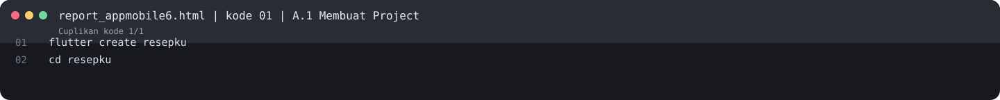
Di dalam folder lib/ dibuat folder:
Penjelasan kode: Susunan folder memisahkan kode berdasarkan tanggung jawab: model untuk bentuk data resep, data untuk daftar awal, pages untuk layar, dan widgets untuk komponen yang digunakan ulang.
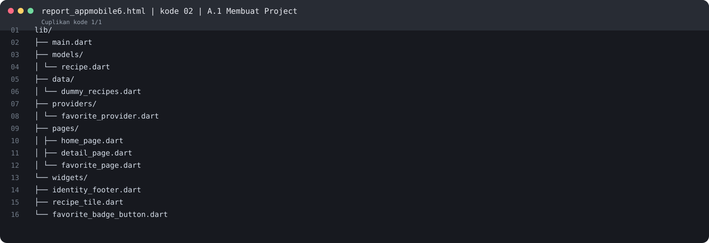
File bawaan test/widget_test.dart dihapus karena masih
merujuk class bawaan Flutter yang tidak digunakan pada project ini.
File lib/models/recipe.dart digunakan untuk
merepresentasikan satu resep.
Penjelasan kode: Class Recipe menjadi struktur data satu resep. Field seperti id, nama, kategori, waktu memasak, porsi, dan rating menyimpan informasi yang kemudian ditampilkan oleh halaman aplikasi.
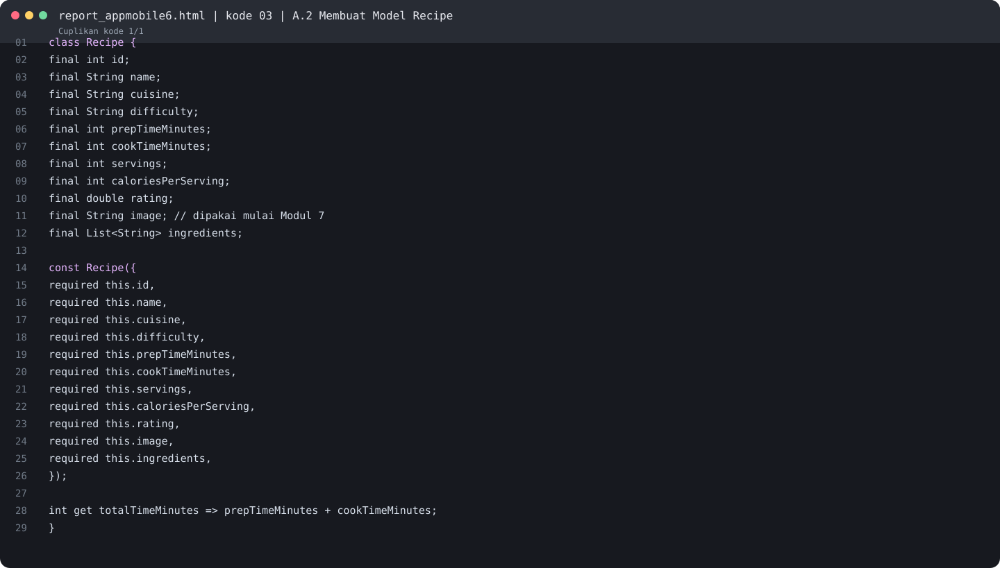
Data dummy terdiri dari enam resep pertama dari DummyJSON. Data ini digunakan sebagai data awal aplikasi sebelum nantinya dikembangkan menggunakan API pada Modul 8.
Penjelasan kode: Daftar dummyRecipes berisi objek Recipe sebagai data awal aplikasi. Setiap objek mengisi properti model sehingga HomePage dapat menampilkan beberapa resep tanpa mengambil data dari server.
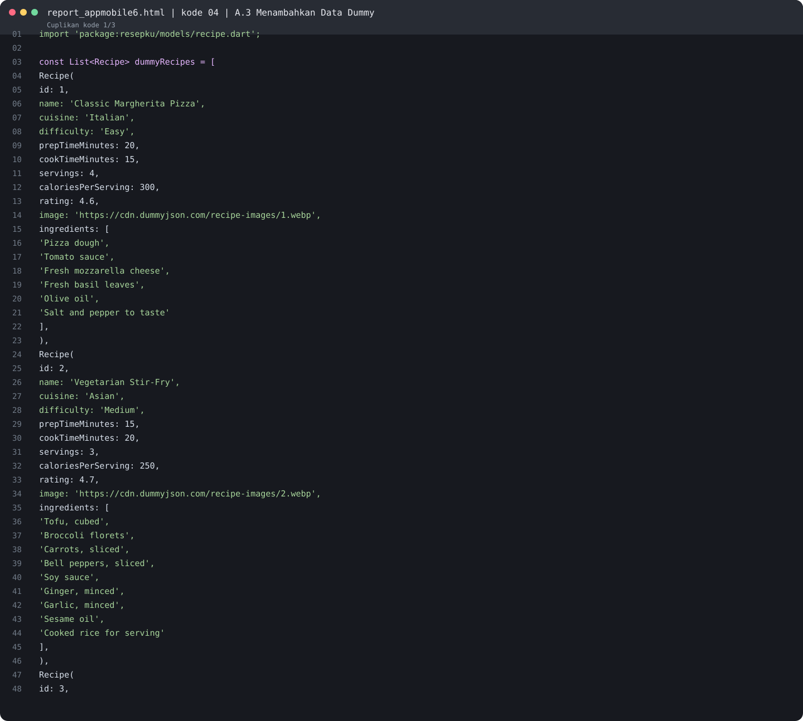
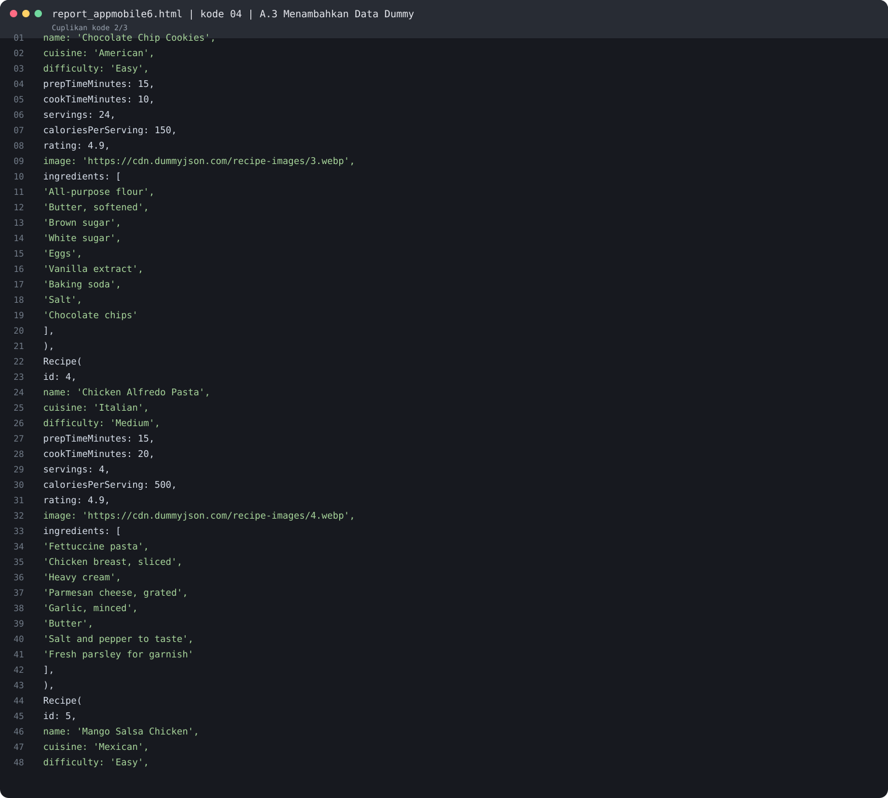
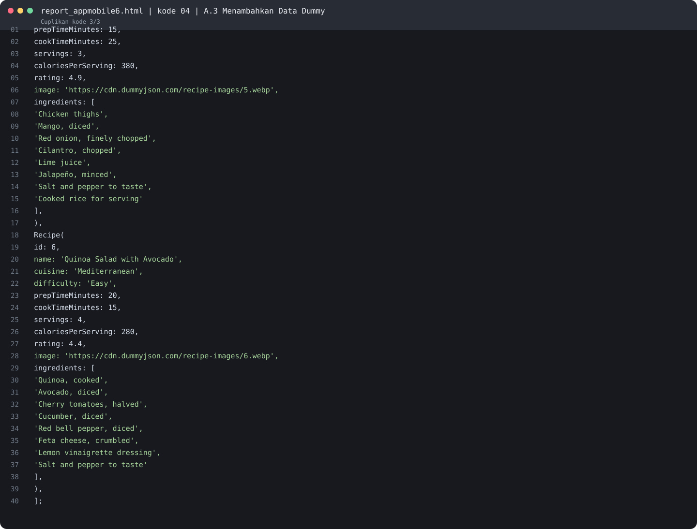
Footer identitas digunakan agar NIM dan nama mahasiswa selalu terlihat pada setiap halaman aplikasi. Nilai NIM dan nama perlu disesuaikan dengan identitas mahasiswa.
Penjelasan kode: Konstanta identitas menyimpan NIM dan nama yang dipakai oleh widget footer. Widget ini dapat dipasang pada halaman yang membutuhkan identitas praktikan.
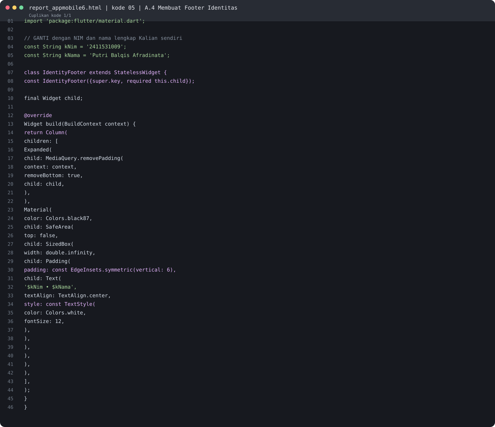
Penjelasan kode: Fungsi main() menjalankan aplikasi melalui runApp(). ResepKuApp menyiapkan MaterialApp, tema awal, dan halaman HomePage sebagai layar pembuka; footer identitas disertakan dalam kerangka halaman.
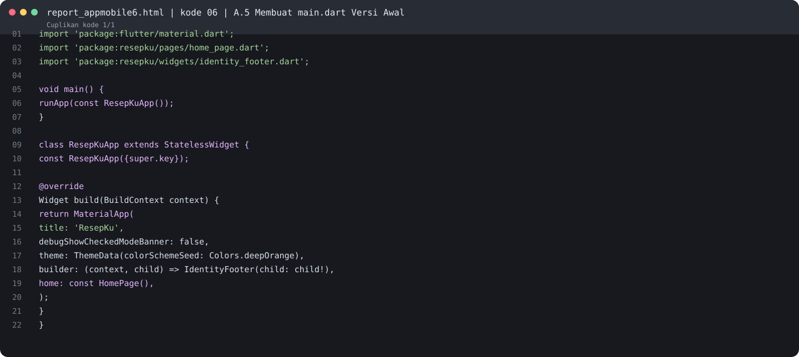
Penjelasan kode: HomePage mengambil data dari dummyRecipes lalu membangun daftar resep. Setiap item dibuat sebagai RecipeTile sehingga tampilan daftar tetap konsisten untuk seluruh resep.
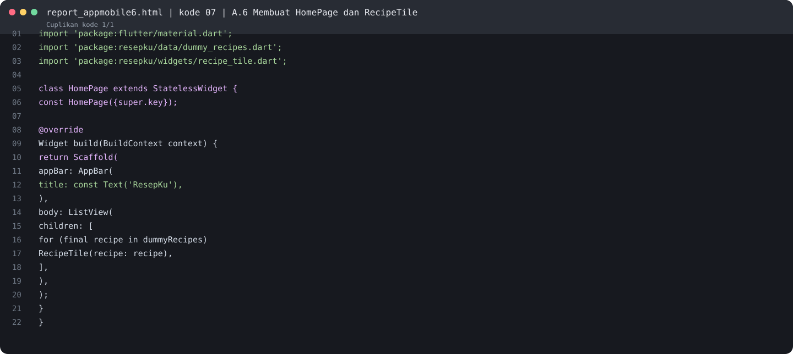
Penjelasan kode: RecipeTile menerima objek Recipe dan menampilkan informasi ringkasnya. Komponen ini juga menyediakan navigasi ke DetailPage dengan membawa resep yang dipilih.
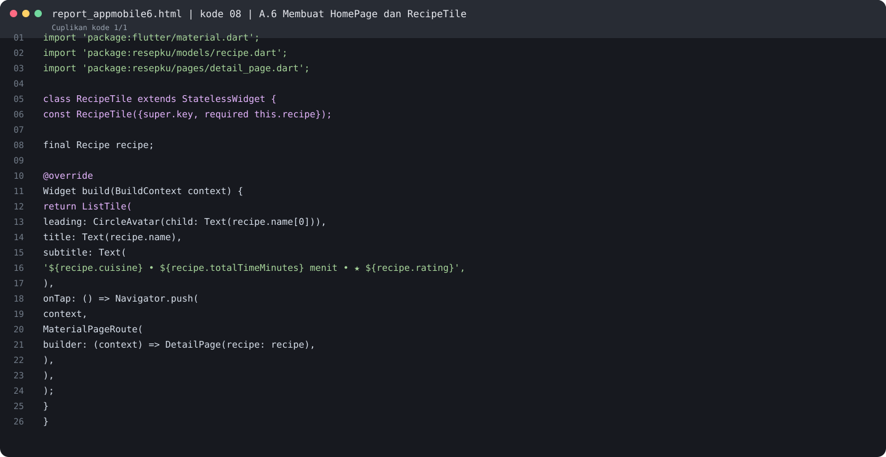
Halaman detail dibuat menggunakan StatefulWidget karena
jumlah porsi merupakan state lokal yang berubah ketika tombol tambah
atau kurang ditekan.
Penjelasan kode: DetailPage menggunakan StatefulWidget untuk menyimpan jumlah porsi yang sedang dipilih. Tombol tambah dan kurang memperbarui nilai melalui setState(), lalu teks jumlah porsi dan kebutuhan bahan dihitung ulang.
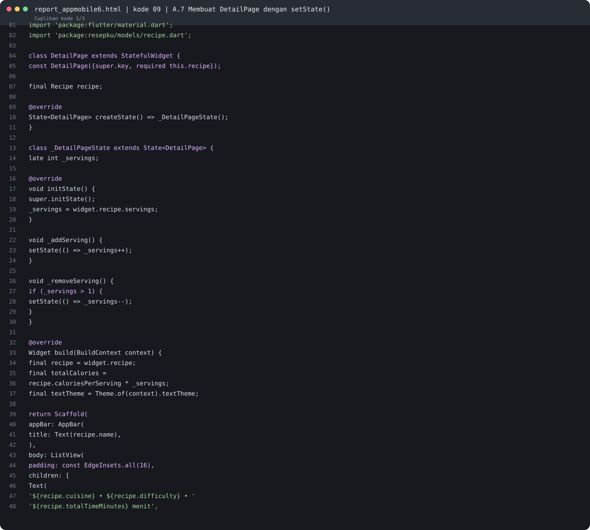
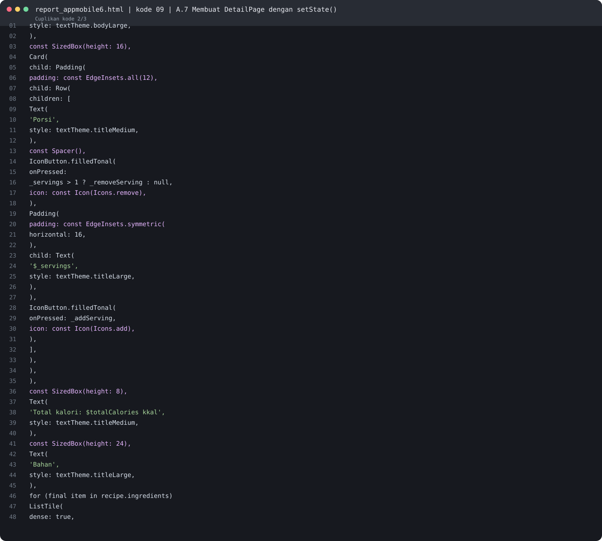
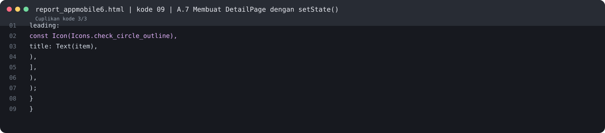
Pengujian dilakukan dengan membuka resep Classic Margherita Pizza kemudian mengubah jumlah porsi menjadi 6.
Penjelasan kode: Ekspresi kondisional hanya memberikan callback _removeServing saat porsi lebih dari satu. Jika nilainya satu, onPressed bernilai null sehingga tombol minus otomatis nonaktif.
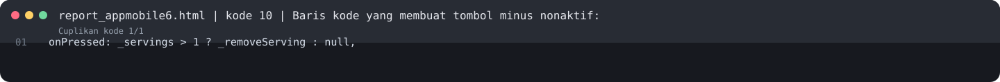
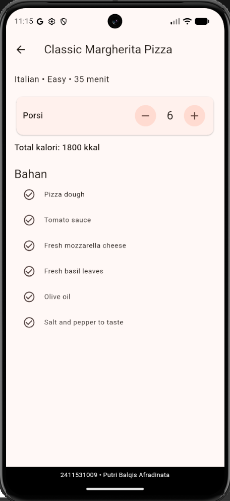
Checkpoint 1
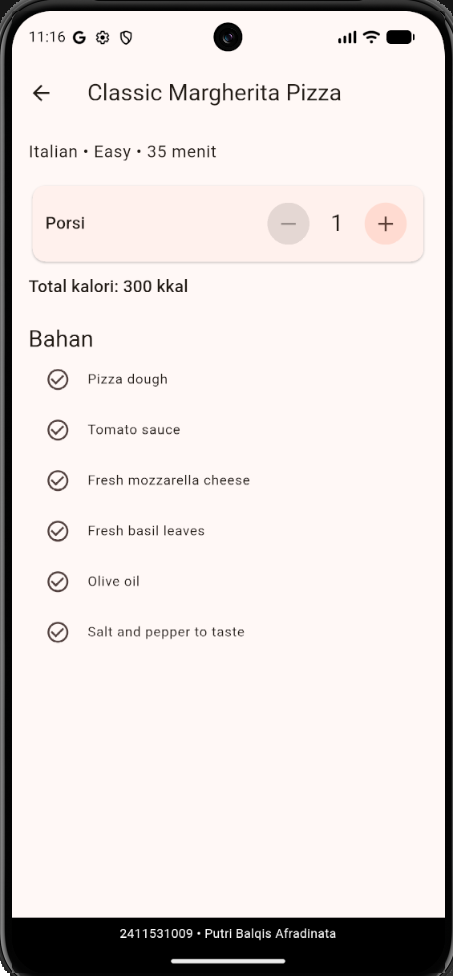
Checkpoint 1
Sebelum menggunakan Provider, fitur favorit dicoba terlebih dahulu
dengan state lokal pada setiap RecipeTile. Tujuan eksperimen
ini adalah mengetahui secara langsung keterbatasan state lokal ketika
data yang sama dibutuhkan oleh beberapa widget.
Penjelasan kode: Eksperimen ini menyimpan status favorit sebagai variabel lokal di setiap RecipeTile. Ikon diperbarui dengan setState(), tetapi nilai tersebut tidak menjadi state bersama yang bisa dibaca halaman lain.
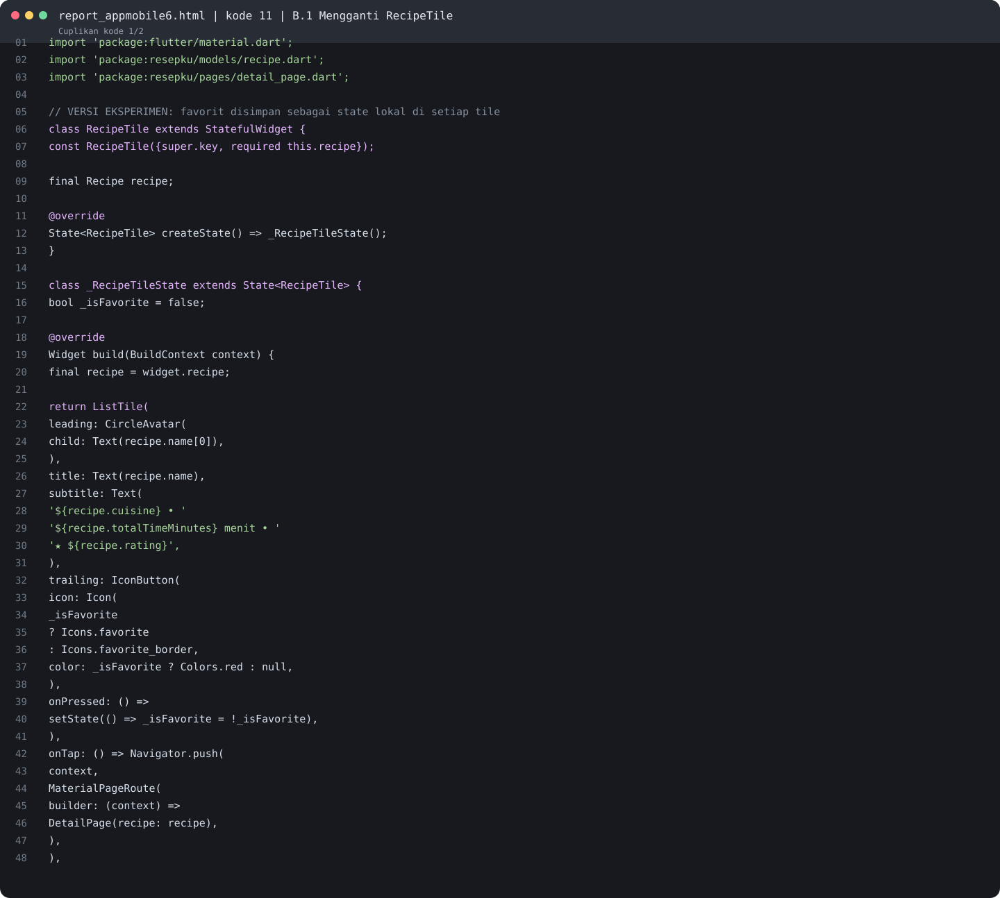
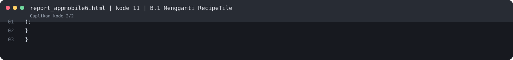
| No. | Pertanyaan | Hasil Pengamatan |
|---|---|---|
| 1 | Apakah ikon hati berubah? Mengapa? |
Ya. Ikon hati berubah karena nilai
_isFavorite berubah ketika
setState() dipanggil. Perubahan tersebut menyebabkan
widget melakukan rebuild sehingga ikon berubah dari
favorite_border menjadi favorite, atau
sebaliknya.
|
| 2 | Apakah jumlah resep favorit dapat ditampilkan di HomePage? |
Tidak secara langsung. Data _isFavorite berada di
class _RecipeTileState, sehingga HomePage tidak memiliki
akses langsung terhadap state tersebut. Setiap RecipeTile memiliki
state favoritnya masing-masing.
|
| 3 | Bagaimana DetailPage mengetahui bahwa suatu resep merupakan favorit? | DetailPage tidak dapat mengetahui state favorit yang disimpan di RecipeTile secara langsung. State tersebut hanya dimiliki oleh tile yang bersangkutan. Oleh karena itu diperlukan state yang dapat diakses oleh beberapa halaman. |
State lokal dengan setState() dapat digunakan dengan baik
untuk perubahan data yang hanya dibutuhkan oleh satu widget atau
satu halaman. Namun, state tersebut menjadi sulit digunakan ketika
data yang sama harus diakses oleh beberapa widget dan halaman.
Pada fitur favorit, data dibutuhkan oleh daftar resep, badge jumlah favorit, halaman detail, dan halaman Favorit. Jika data favorit disimpan pada setiap RecipeTile, widget lain tidak dapat membacanya dengan mudah. Oleh karena itu, data favorit dipindahkan ke Provider sebagai state bersama.
Pada bagian ini daftar favorit dipindahkan menjadi app state menggunakan
package Provider. State disimpan dalam FavoriteProvider
yang meng-extend ChangeNotifier.
Penjelasan kode: Perintah flutter pub add provider menambahkan package Provider ke pubspec dan mengambil dependensinya agar ChangeNotifierProvider serta API context tersedia di aplikasi.
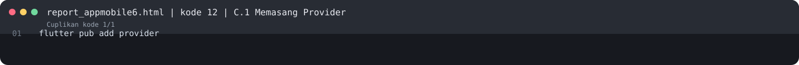
Perintah tersebut menambahkan package Provider ke project Flutter.
Penjelasan kode: FavoriteProvider menyimpan daftar resep favorit dan menyediakan operasi untuk mengecek serta mengubahnya. Setelah toggle mengubah daftar, notifyListeners() memberi tahu widget yang berlangganan agar membangun ulang tampilannya.
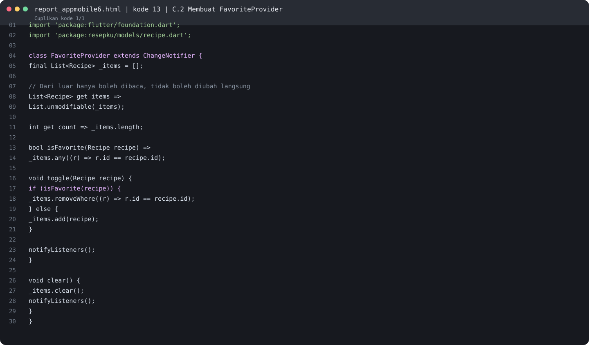
Method toggle() digunakan untuk menambahkan atau
menghapus resep dari daftar favorit. Setelah data berubah,
notifyListeners() dipanggil agar widget yang mendengarkan
perubahan Provider dapat melakukan rebuild.
Penjelasan kode: ChangeNotifierProvider ditempatkan di atas halaman aplikasi pada widget tree. Dengan scope ini, halaman dan widget turunannya dapat mengakses FavoriteProvider yang sama.
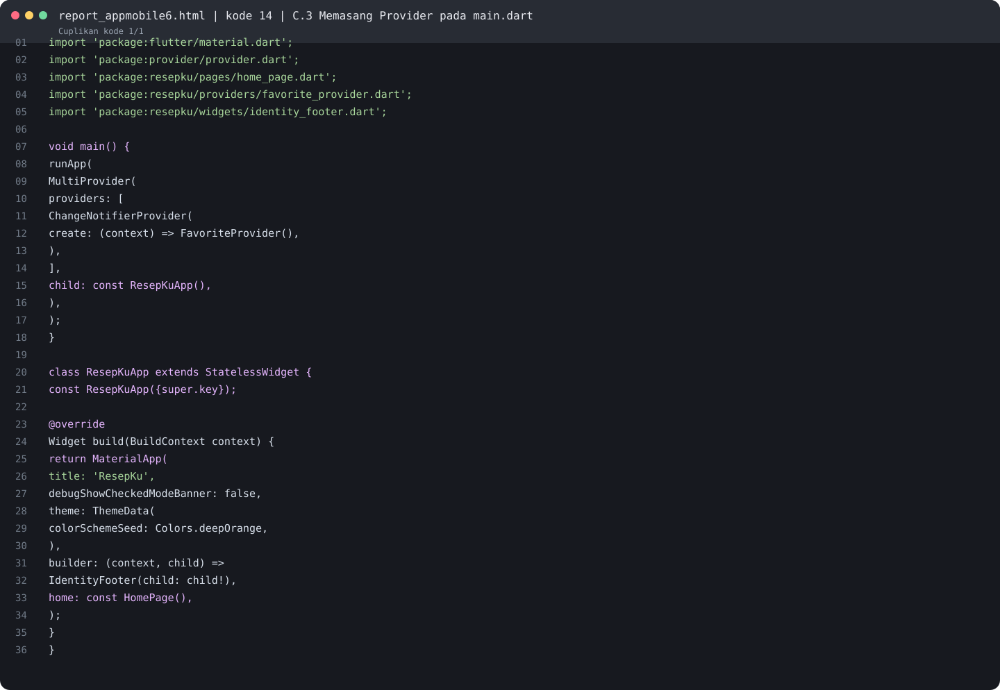
Catatan: setelah mengubah main.dart,
dilakukan hot restart, bukan hanya hot reload. Hal ini
diperlukan agar main() dijalankan kembali dan
Provider terpasang pada widget tree.
Penjelasan kode: RecipeTile membaca status resep dari FavoriteProvider untuk menentukan ikon hati. Ketika tombol ditekan, context.read() memanggil toggle() tanpa membuat callback ikut berlangganan perubahan state.
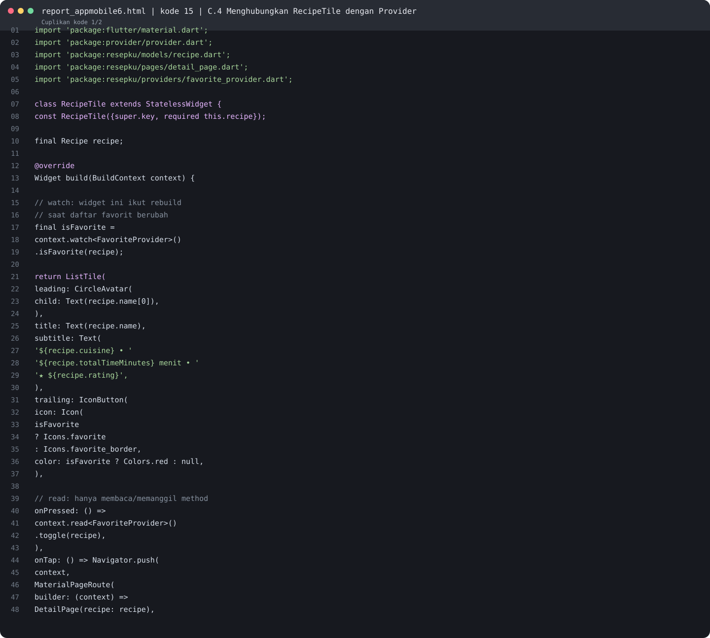
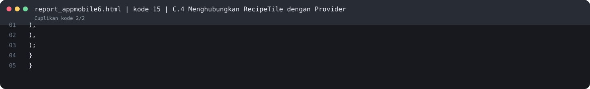
Penjelasan kode: DetailPage menggunakan Provider untuk menampilkan status favorit resep yang sedang dibuka dan mengubahnya dari tombol hati. Data yang sama tersinkron dengan RecipeTile karena keduanya memakai FavoriteProvider bersama.
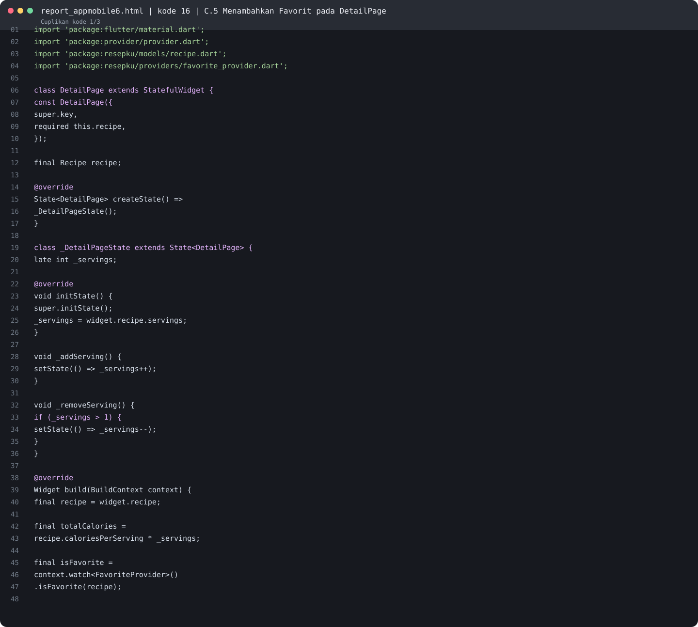
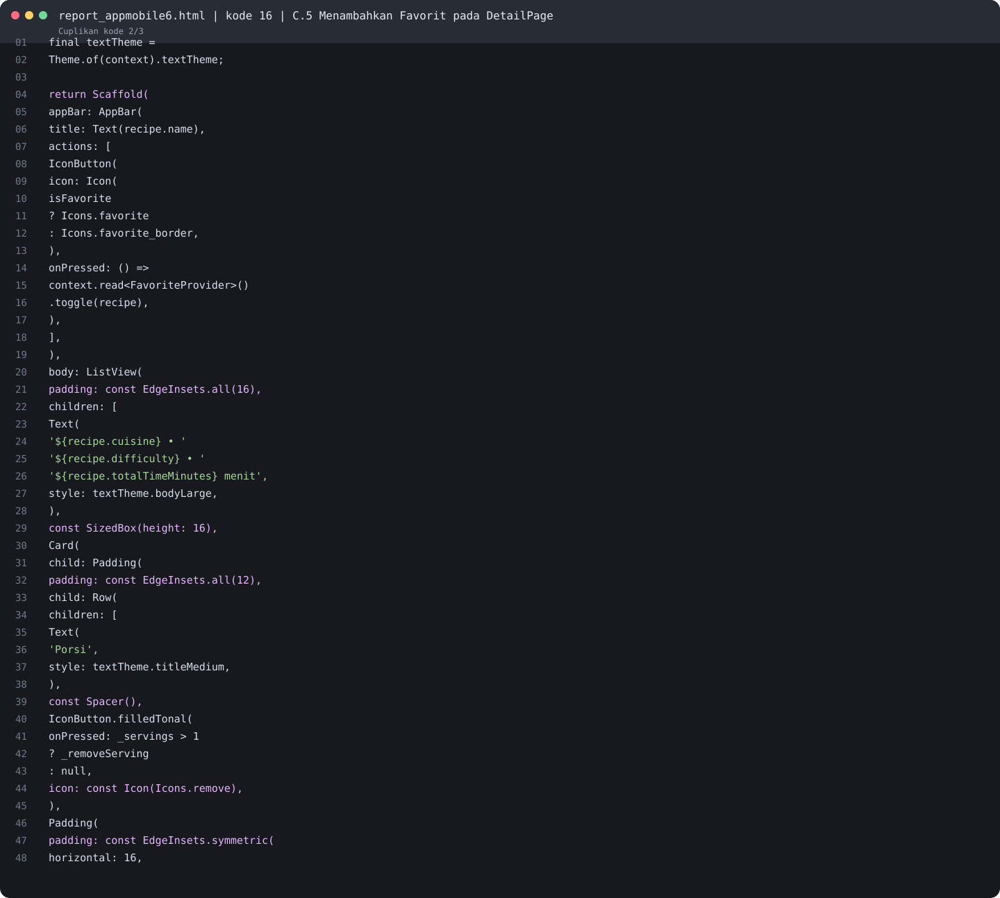
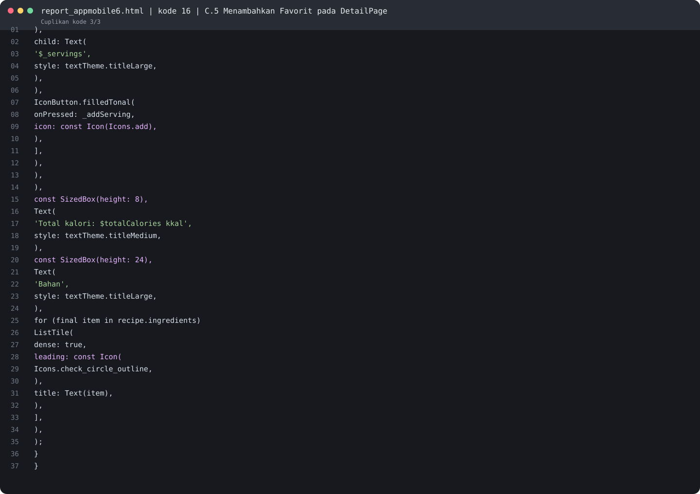
Penjelasan kode: FavoritePage membaca daftar resep dari FavoriteProvider. Jika daftar kosong, halaman menampilkan keadaan kosong; jika ada isinya, resep favorit ditampilkan sebagai daftar yang dapat dibuka.
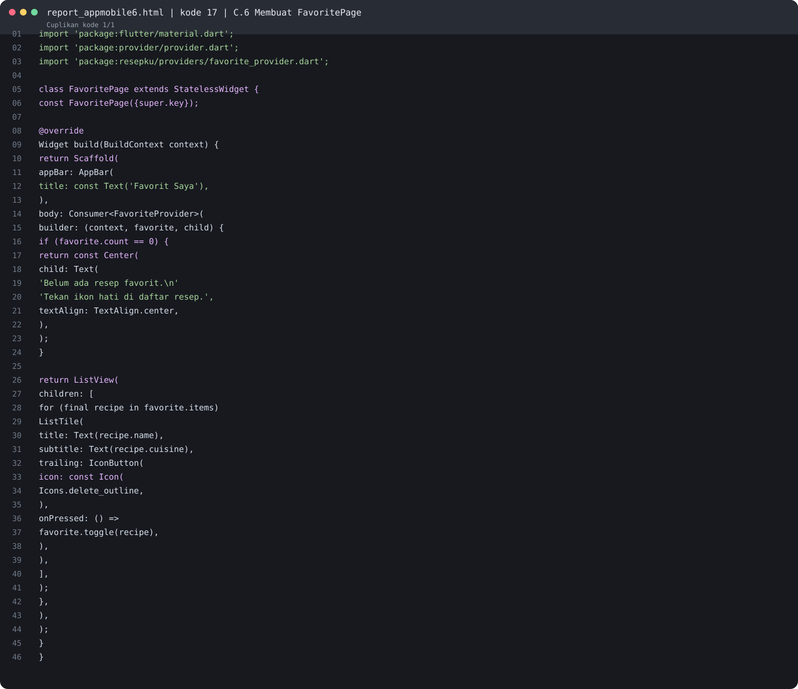
Penjelasan kode: FavoriteBadgeButton mendengarkan jumlah item favorit dan menampilkannya sebagai badge pada tombol. Consumer membatasi bagian yang perlu membangun ulang saat jumlah berubah.
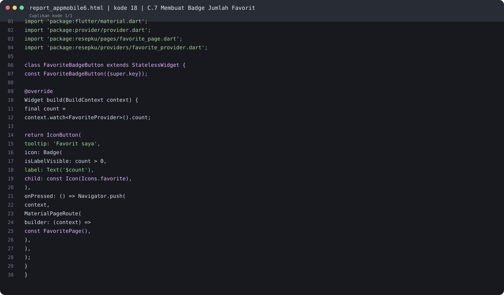
Penjelasan kode: HomePage memasang FavoriteBadgeButton pada AppBar. Tombol tersebut membuka FavoritePage, sementara badge menunjukkan jumlah favorit terkini.
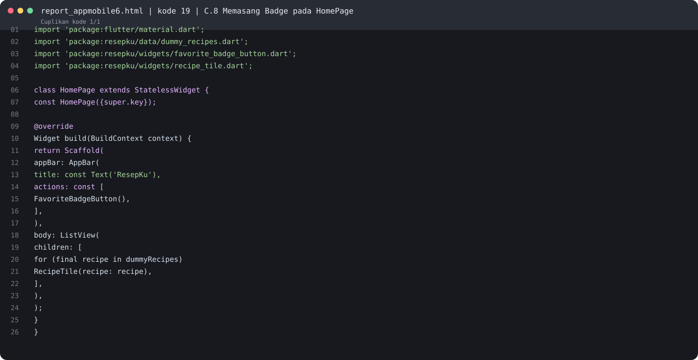
Setelah seluruh fitur Provider selesai, dilakukan hot restart dan pengujian terhadap enam skenario yang diberikan pada modul.
| No. | Skenario | Hasil yang Diharapkan | Hasil Pengujian | Status |
|---|---|---|---|---|
| 1 | Tap ikon hati pada Margherita dan Alfredo di Home. | Ikon berwarna merah dan badge menunjukkan angka 2. | Kedua resep menjadi favorit dan badge menampilkan angka 2. | ✓ Sesuai |
| 2 | Buka detail Margherita. | Ikon hati di AppBar terisi. | Ikon hati pada AppBar DetailPage terisi. | ✓ Sesuai |
| 3 | Pada DetailPage tap ikon hati lalu kembali ke Home. | Ikon Margherita kosong dan badge menjadi 1. | Margherita tidak lagi menjadi favorit dan badge berubah menjadi 1. | ✓ Sesuai |
| 4 | Tap badge pada AppBar. | Halaman Favorit hanya berisi Alfredo. | FavoritePage hanya menampilkan Chicken Alfredo Pasta. | ✓ Sesuai |
| 5 | Hapus Alfredo dari halaman Favorit. | Pesan belum ada favorit muncul dan badge hilang. | Daftar favorit menjadi kosong dan badge tidak ditampilkan. | ✓ Sesuai |
| 6 | Ubah porsi menjadi 2, kembali ke Home, lalu buka lagi resep yang sama. | Porsi kembali ke nilai awal karena state lokal dibuang. | Jumlah porsi kembali ke nilai awal resep. | ✓ Sesuai |
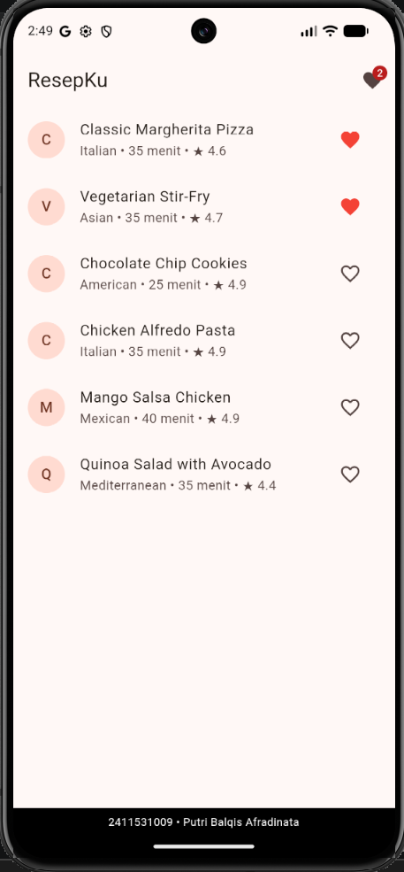
Checkpoint 2
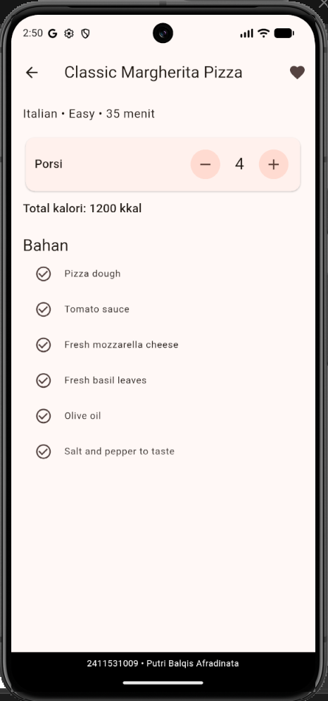
Checkpoint 2
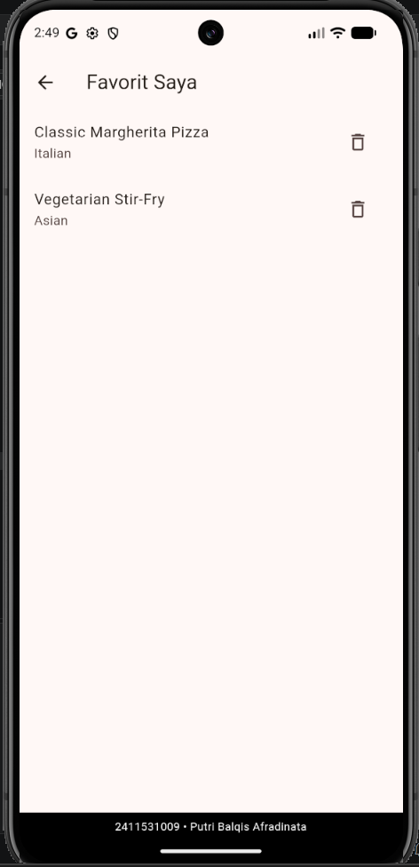
Checkpoint 2
Ikon hati dapat berubah karena setiap RecipeTile memiliki state
lokal _isFavorite dan perubahan nilainya dibungkus
dengan setState(). Namun, state tersebut hanya berada
di dalam class _RecipeTileState. HomePage tidak dapat
membaca state tersebut secara langsung sehingga jumlah favorit tidak
mudah ditampilkan pada AppBar. DetailPage juga tidak dapat mengetahui
status favorit dari RecipeTile. Hal ini menunjukkan bahwa state lokal
tidak sesuai untuk data yang harus digunakan bersama oleh banyak widget
dan halaman.
Jumlah porsi tetap menggunakan setState() karena data
tersebut hanya dibutuhkan oleh halaman DetailPage dan tidak perlu
dibagikan kepada halaman lain. Hal ini juga terlihat pada skenario 6,
ketika jumlah porsi diubah menjadi 2 lalu pengguna kembali ke Home
dan membuka kembali resep tersebut. Jumlah porsi kembali ke nilai awal
karena state lokal ikut dibuang ketika halaman DetailPage ditutup.
Perilaku tersebut sesuai dengan kebutuhan fitur sehingga jumlah porsi
tidak perlu dimasukkan ke Provider.
Jika ChangeNotifierProvider dipindahkan dari
main() ke dalam HomePage dan hanya membungkus Scaffold,
maka Provider berada di bawah HomePage dalam widget tree. Ketika
FavoritePage dibuka menggunakan route baru, halaman tersebut dapat
berada di luar scope Provider tersebut. Akibatnya FavoritePage tidak
dapat menemukan FavoriteProvider dan dapat muncul
ProviderNotFoundException. Oleh karena itu Provider
dikembalikan ke posisi semula, yaitu di atas MaterialApp, sehingga
seluruh halaman dapat mengakses state favorit yang sama.
Latihan pertama menambahkan pengelolaan tema menggunakan Provider. Pengguna dapat mengaktifkan SwitchListTile "Mode gelap" pada halaman Pengaturan. Ketika switch diaktifkan, seluruh aplikasi menggunakan dark theme.
File yang dibuat adalah
lib/providers/theme_provider.dart.
Penjelasan kode: ThemeProvider menyimpan ThemeMode dan menyediakan method untuk mengganti tema. notifyListeners() memicu pembaruan pada MaterialApp ketika pengguna berpindah antara mode terang dan gelap.
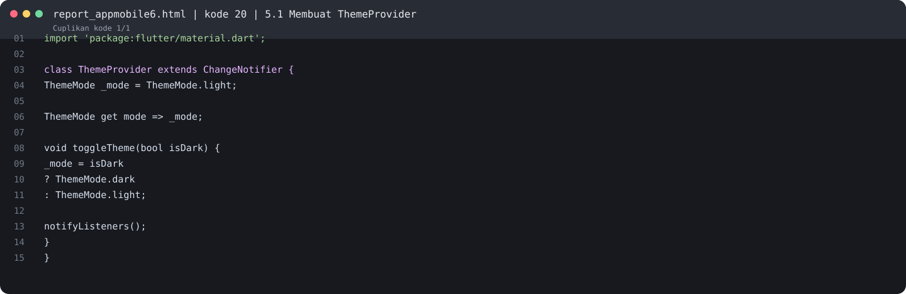
ThemeProvider ditambahkan bersama FavoriteProvider pada
MultiProvider.
Penjelasan kode: ThemeProvider didaftarkan bersama FavoriteProvider di MultiProvider. Kedua state provider kemudian tersedia pada bagian aplikasi di bawahnya.
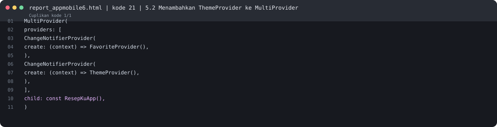
Karena MaterialApp perlu mengikuti perubahan mode tema, digunakan
context.watch<ThemeProvider>().mode.
Penjelasan kode: MaterialApp membaca mode melalui context.watch<ThemeProvider>(). Perubahan mode dari provider membuat MaterialApp membangun ulang tampilan dengan theme atau darkTheme yang sesuai.
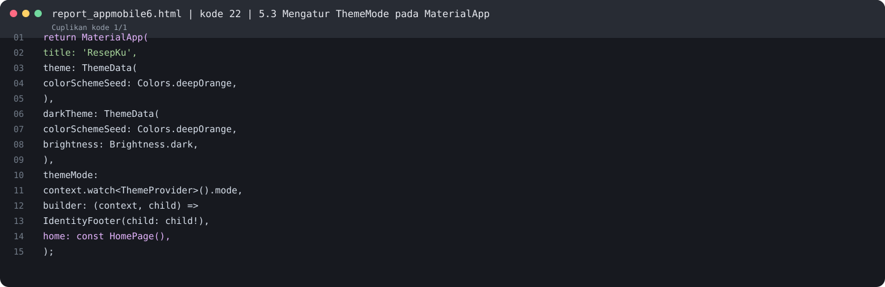
Halaman Pengaturan menyediakan switch untuk mengaktifkan dan menonaktifkan mode gelap.
Penjelasan kode: SettingsPage menampilkan SwitchListTile untuk mode gelap. Nilai switch mengikuti ThemeProvider dan perubahan switch memanggil method provider untuk mengganti ThemeMode.
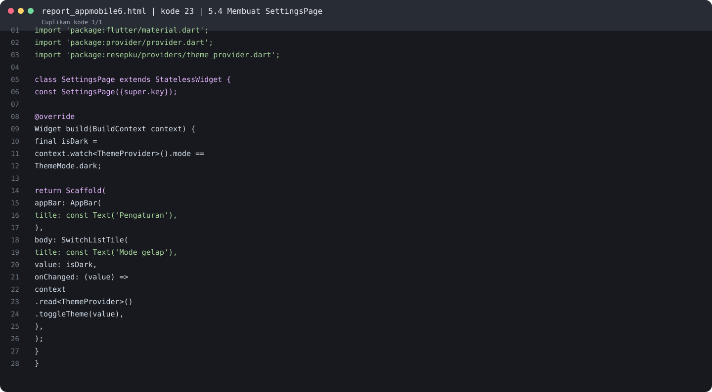
Penjelasan kode: Potongan pertama menambahkan IconButton pengaturan pada actions AppBar bersama tombol badge favorit. Tombol ini menjadi akses menuju halaman pengaturan.
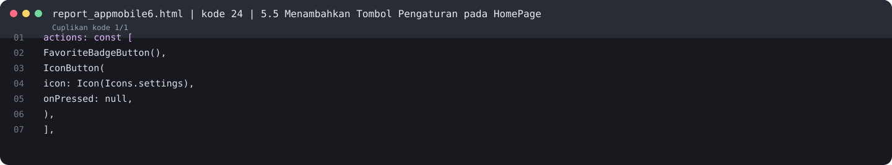
Tombol pengaturan diarahkan menuju SettingsPage menggunakan Navigator.push. Implementasi navigasinya dapat ditulis sebagai berikut:
Penjelasan kode: Potongan kedua menjalankan Navigator.push() dan membuat route SettingsPage. Pengguna dapat membuka pengaturan dari HomePage tanpa mengganti struktur halaman utama.
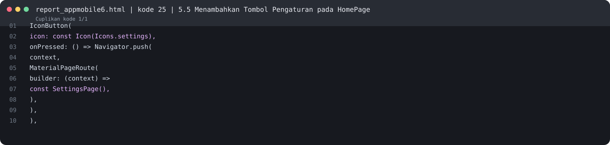
Setelah halaman Pengaturan dibuat, switch "Mode gelap" dapat digunakan untuk mengubah tema aplikasi. Ketika switch aktif, tampilan aplikasi berubah menjadi dark theme. Ketika switch dimatikan, aplikasi kembali menggunakan light theme. Perubahan tema berlaku pada seluruh aplikasi karena ThemeProvider berada pada MultiProvider di atas MaterialApp.
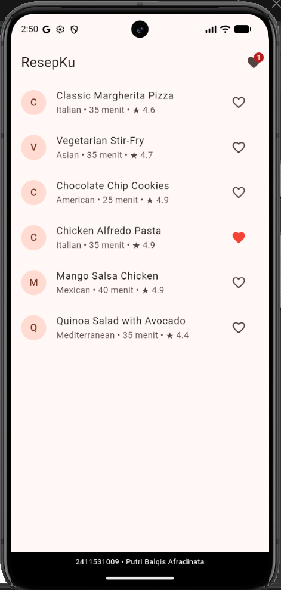
Mode Terang
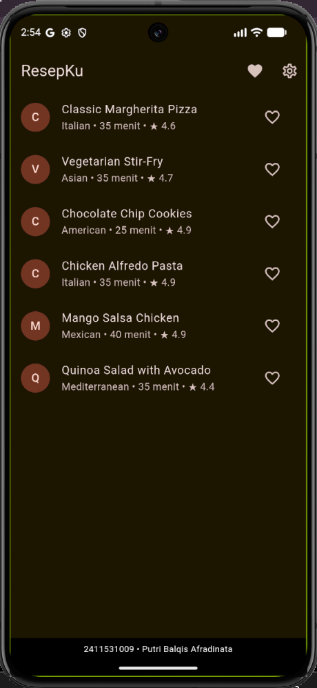
Mode Gelap
Latihan kedua menambahkan tombol "Hapus semua" pada AppBar FavoritePage. Tombol digunakan untuk menghapus seluruh resep favorit setelah pengguna memberikan konfirmasi melalui AlertDialog.
Penjelasan kode: FavoritePage menambahkan aksi hapus semua pada AppBar dan menampilkan AlertDialog sebagai konfirmasi. Jika pengguna menyetujui, clear() mengosongkan daftar favorit dan notifyListeners() memperbarui halaman serta badge.
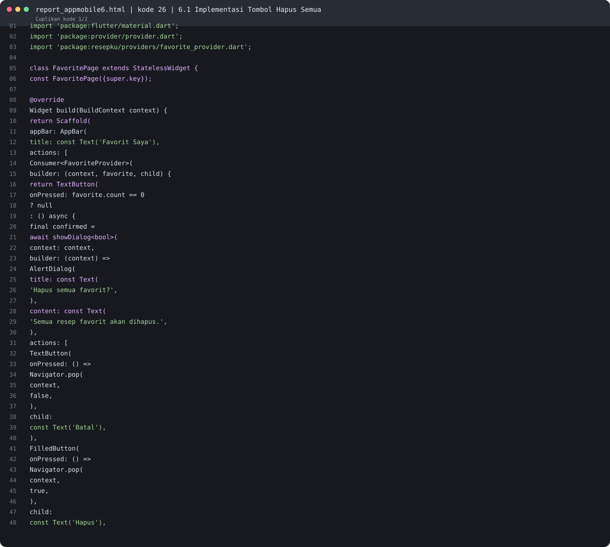
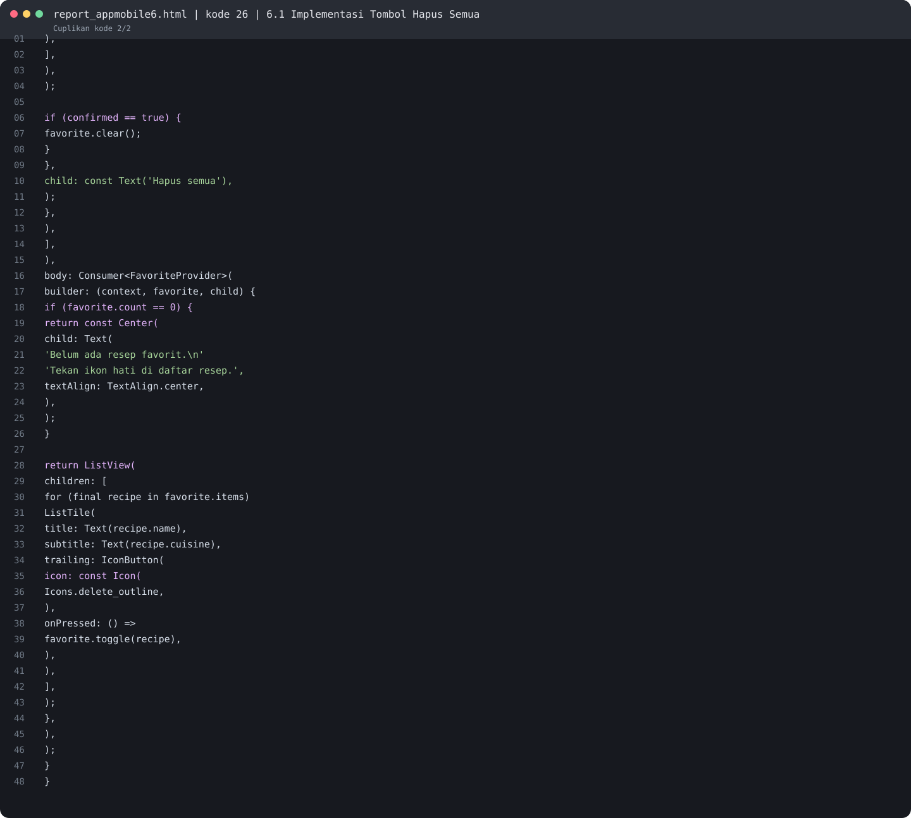
Ketika terdapat resep favorit, tombol "Hapus semua" dapat digunakan.
Sebelum data dihapus, aplikasi menampilkan AlertDialog untuk meminta
konfirmasi. Jika pengguna memilih "Batal", data favorit tetap ada.
Jika pengguna memilih "Hapus", seluruh daftar favorit dihapus
melalui method clear(). Ketika daftar favorit kosong,
tombol "Hapus semua" menjadi nonaktif.
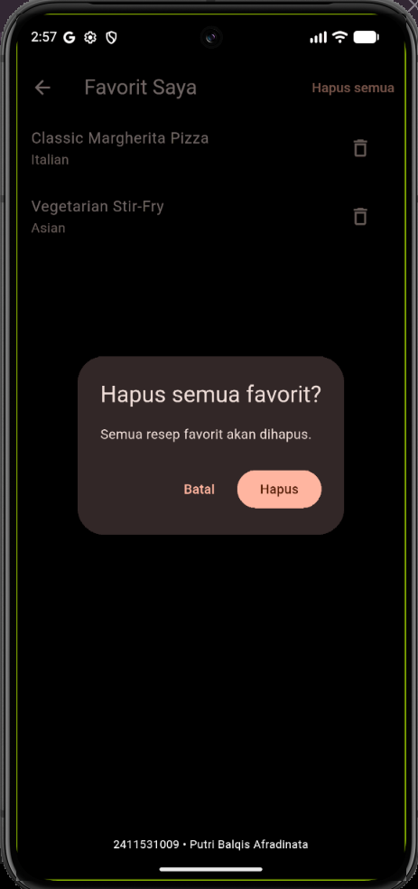
AlertDialog "Hapus semua favorit?"
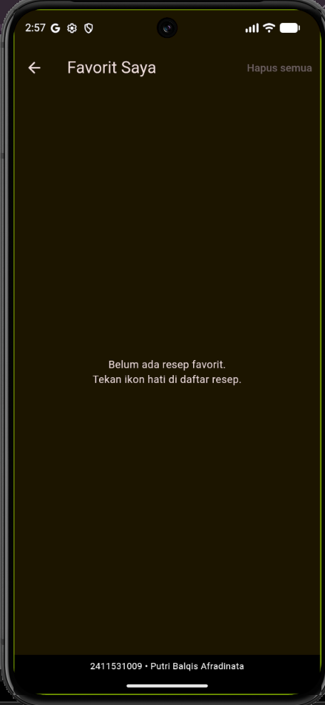
setelah seluruh favorit dihapus dan tombol "Hapus semua" nonaktif
Berdasarkan seluruh tahapan praktikum, aplikasi ResepKu berhasil
menerapkan dua pendekatan state management. State lokal menggunakan
setState() diterapkan pada jumlah porsi di DetailPage,
sedangkan state favorit menggunakan Provider karena data favorit
dibutuhkan oleh beberapa widget dan halaman.
| Fitur | State Management | Hasil |
|---|---|---|
| Jumlah porsi | setState() | Berhasil mengubah jumlah porsi dan total kalori. |
| Favorit RecipeTile | Provider | Status favorit dapat dibaca oleh widget lain. |
| Badge favorit | Provider | Jumlah favorit berubah secara otomatis. |
| FavoritePage | Consumer | Daftar favorit dapat ditampilkan dan diperbarui. |
| Mode gelap | ThemeProvider | Tema aplikasi dapat berubah secara global. |
| Hapus semua favorit | FavoriteProvider.clear() | Seluruh favorit dapat dihapus setelah konfirmasi. |
Praktikum State Management pada aplikasi ResepKu menunjukkan bahwa
pemilihan metode state management harus disesuaikan dengan kebutuhan
data. setState() sesuai digunakan untuk state lokal yang
hanya diperlukan oleh satu halaman, seperti jumlah porsi pada
DetailPage. Perubahan state tersebut akan membangun kembali UI pada
halaman yang bersangkutan.
Untuk data yang digunakan oleh banyak widget dan halaman, seperti
daftar resep favorit, penggunaan state lokal pada masing-masing widget
menjadi tidak efektif. Provider dengan ChangeNotifier
memungkinkan data favorit disimpan pada satu tempat dan digunakan
bersama oleh RecipeTile, DetailPage, FavoriteBadgeButton, dan
FavoritePage.
Penggunaan context.watch(), context.read(),
dan Consumer juga menunjukkan bagaimana widget dapat
mendengarkan atau mengakses state Provider sesuai kebutuhan. Selain
itu, ThemeProvider dapat digunakan untuk mengatur perubahan tema
secara global, sedangkan method clear() dapat digunakan
untuk mengelola penghapusan seluruh data favorit.
Dengan demikian, state yang hanya diperlukan oleh satu halaman dapat tetap menggunakan state lokal, sedangkan state yang digunakan bersama oleh banyak bagian aplikasi sebaiknya ditempatkan pada state management yang memiliki scope lebih luas seperti Provider.